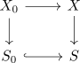
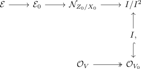
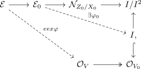
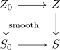
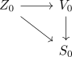

lifting smooth closed subschemes up to etale neighbourhoods
Proposition
Let

be a pullback square in affine schemes such that $X/S$ is smooth. Suppose $Z_0 \rightarrow X_0$ is a smooth map of affine schemes. Then there exists an affine etale neighbourhood $V \rightarrow X$ of $Z_0$ and a closed subscheme $Z \hookrightarrow V$, smooth over $S$, such that $Z \times_{S} S_0 = Z_0$.
Proof
Now closed immersion between smooth schemes is regular implies that $Z_0 \hookrightarrow X_0$ is a regular closed immersion. This implies that the conormal module $\mathcal{N}_{Z_0/X_0}$ is a finite, locally free sheaf on $Z_0$.
By algebraic lifting vector bundle theorem up to etale neighbourhoods there exists an affine etale neighbourhood $V \rightarrow X$ of $Z_0$ and $\mathcal{E}$ finite locally free on $V$ lifting $\mathcal{N}_{Z_0/X_0}$. Let $V_0= V \times_{X} X_0 \rightarrow X_0$ and $\mathcal{E}_0 = \mathcal{E}_{\vert V_0}$. Let qi$ be the ideal of $Z_0 \hookrightarrow V_0$.
\begin{displaymath}
\begin{tikzcd}
|[label={[label distance=-2mm]-45:\lrcorner}]|
Z_0 \rar \uar & V_0 \dar \\
Z_0 \rar & X_0
\end{tikzcd}
\end{displaymath}where $V_0 $\rightarrow X_0$ is etale. then the <long exact sequence of the conormal module> implies that $\mathcal{N}_{Z_0/X_0} = \mathcal{N}_{Z_0/V_0 = I/I^2$.
Then up to suppressing the pushforward notation (= restriction of scalars), we have quotients

Since $V$ is affine, $\mathcal{E}$ is projective in $\mathrm{QCoh}(V)$ and $\mathcal{E}_0$ is projective in $\mathrm{QCoh}(V_0)$ (= on affnie, finitel locally free = projective modules)$.
Therefore we can find a lifts (since $\mathcal{E}, \mathcal{E}_{0}$ are projective in their respective categories)

Let $Z = V(\varphi) \hookrightarrow V$
We want 1) $Z \times_S S_0 = Z_0$ and 2) $Z \rightarrow S$ to be smooth after replacing $Z$.
1)
Let $Z \times_{S} S_0 = Z \times_{V} V_0 = V(\varphi_0)$ and $\varphi_0: \mathcal{E}_0 \rightarrow I \hookrightarrow \mathcal{O}_{V_0}$ Then $(\varphi_{0})_{\vert Z_0}: \mathcal{E_0} \otimes_{\mathcal{O}_{V_0}} \mathcal{O}_{Z_0} \twoheadrightarrow I/I^2$ is surjective, so by Nakayama this map $\varphi_0$ is surjective in some neighborhood of $Z_0$.
Hence $V(\varphi_0) = Z_0 \coprod W$ where $W \subseteq V(\varphi_0) \subseteq V$ is closed, since in some neighbourhood of $Z_0$, the vanishing locus is given by $Z_$ (??).
Consider
Where we replace $V$ by $V_f$ so $V(\varphi_0) = Z_0$
2)
we have a pullback digaram

where $Z_0 \rightarrow S_0$ is smooth. This implies that for points over $S_0$, the map $Z \rightarrow S$ is smooth (cf. fiberwise smoothness).
By fiberwise smoothness, $Z \rightarrow S$ is smooth in a neighborhood of $Z_0$ if and only if $Z \rightarrow S$ is flat .in a neighborhood of $Z_0$.
fix $z \}n z_0$ which maps to $s \in S_0$. We then need to show that $\mathcal{O}_{Z,z}$ is flat over $\mathcal{O}_{S,s}$.
It suffices to show fiberwise regularity, i.e that this map
modulo the maximal ideal is a regular morphism of schemes.
Now

and $\varphi_0: \mathcal{E}_0 \rightarrow \mathcal{O}_{V_0}$ cuts out $Z_0$. There $\mathrm{rk}(\mathcal{E}_0) = \mathrm{rk}(\mathcal{N}_{z_0/N_0}$ so $\varphi_0$ is regular and remains regular after any base change $s_0' \rightarrow S_0$.
Hence
shows $\overline{\varphi}$ is regular and fiberwise regularity implies flatness.
By shrinking $V$, we can assuem that $Z \rightarrow S$ is smooth:
We can also shrink further so thta $V$ is still affine (???).